Context
I leveraged historical data from the CES survey at verification flow drop off and readily available transaction data as a proof of concept and conversation starter, to understand if there was the possibility of detecting downstream economic impact from measuring user perception (in this case perceived effort — which could mean friction, but might not. More on that later).
This analysis isn't causal, and there are a lot of other variables that would be useful as inputs to make a true conclusion. The purpose of this study was to start the conversation (and teach me about Wise's data landscape). I wanted to answer the question — is this a thread worth pulling. The data show the answer is yes, and I hope this work can kick off conversations and a more in depth workstream to close some of the gaps implicit in this analysis.
Summary of Findings
Key finding: CES score from the personal verification flow is a statistically significant predictor of follow-on transfer frequency across all platforms. After controlling for country and platform, each 1-point CES increase is associated* with 7.9% more follow-on transfers (negative binomial regression, p<0.0001). This is the strongest and most consistent behavioral signal in the data.
*Important note — correlation != causation! While this is a great signal, there are many caveats and unknowns and we shouldn't start going on an 8% transaction increase from driving CES improvements (...yet).
What CES predicts well:
- Follow-on transfer count — significant across all platforms (Kruskal-Wallis: Android p=0.002, iOS p=0.008, Web p<0.0001). Top-3-box users make more repeat transfers than bottom-box users.
- Conversion to first transfer (mobile only) — Android (p=0.0005) and iOS (p=0.0002) show a ~5-8pp conversion lift for higher CES users. Web shows no significant relationship.
What CES does not predict:
- Transfer value — no meaningful relationship on mobile. Web shows significance but may be driven by a few high-value outliers.
- First transfer amount — no pattern, which is actually useful: it confirms CES measures verification friction, not user wealth/intent.
- Time to first transfer — counterintuitively, lower-CES users transfer faster. Multiple explanations are plausible (urgency bias, review delays, selection). However, an interaction test confirms this does NOT moderate the repeat-transfer finding — the CES effect is consistent across fast and slow converters.
| Outcome | Signal? | Detail |
|---|---|---|
| Follow-on transfer count | Yes *** | All platforms (p<0.01). Rate ratio 1.079. |
| Conversion (mobile) | Yes ** | Android & iOS ~5-8pp lift. Web ns. |
| Transfer value | No | No mobile relationship. Web = outliers. |
| First transfer amount | No | CES measures friction, not wealth. |
| Time to first transfer | Reversed | Low CES → faster transfer (motivation bias). |
Survey Responses & CES Score Over Time
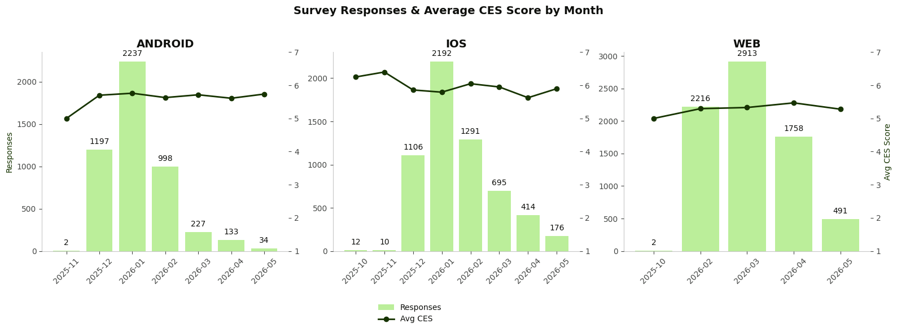
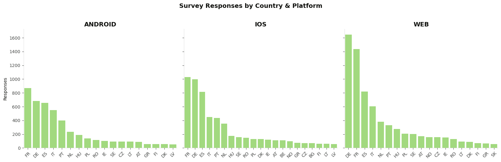
The chart shows countries with responses >50 to make the visualisation cleaner. There are ~200 responses in the data across a wide array of other countries.
The data was cleaned to remove instances where a user responded to the survey more than once (keeping only their first response). This removed <1% of responses.
Conversion to First Transfer
CES score is associated with whether the respondent makes a transfer after verification?
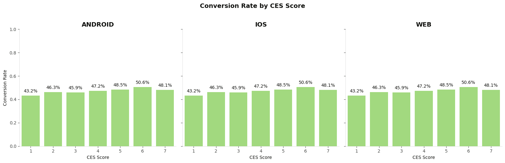
CES score is significantly associated with conversion on Android (p=0.0005) and iOS (p=0.0002), but not on Web (p=0.052). The effect is modest — conversion ranges from ~50% (low CES) to ~60% (high CES) on mobile.
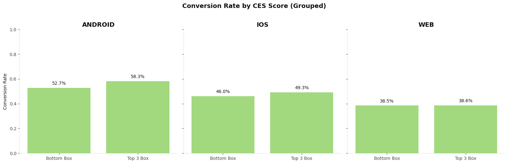
The top-3-box grouping sharpens the mobile finding — Android (p<0.0001) and iOS (p=0.005) show significantly higher conversion for top-3-box vs bottom-box users. Web remains non-significant (p=0.93).
The absolute difference is still small (~5-8pp on mobile). That the signal is strengthened with this grouping suggests that reducing scale granularity would lead to better measurement ability.
Time to First Transfer
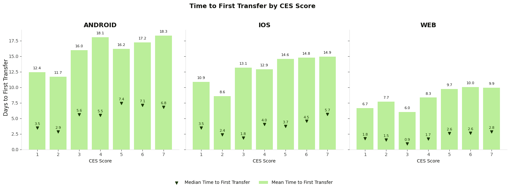
Lower CES users tend to transfer faster, the opposite of what we'd expect. Multiple explanations are plausible and we cannot distinguish between them with this data:
- Motivation bias: Users with high urgency pushed through a frustrating experience (hence low CES) but their strong intent meant they transferred quickly anyway.
- Process-driven: Slow manual reviews cause both low CES (frustration with wait) and fast first transfer (pent-up intent releases immediately on approval).
- Selection: The fastest converters may have simpler verification paths that still feel effortful on mobile.
The large mean/median gap indicates heavy right-skew driven by a few slow converters. This ambiguity demonstrates the difficulty in using a perception-based metric without process instrumentation to disambiguate.
Interaction Test: CES × Conversion Speed
Does the CES effect only hold for slow converters? If so, the pooled finding might be masking two separate populations.
The interaction between CES and conversion speed is non-significant (p=0.91). The CES → repeat transfer relationship is consistent across fast converters (+6.5% per point), medium converters (+7.9%), and slow converters (+7.7%). These are not two separate populations — the pooled 7.9% effect is robust regardless of how quickly users made their first transfer.
The timing paradox (lower CES → faster first transfer) and the frequency finding (higher CES → more repeat transfers) are operating on different dimensions. Whatever explains the speed pattern does not moderate the CES–retention relationship.
First Transfer Amount
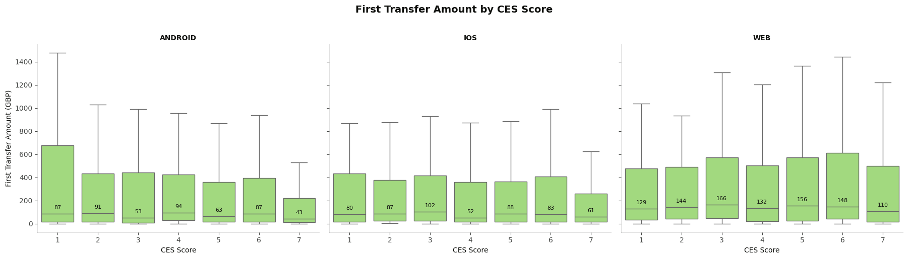
First transfer amounts are similar across CES scores — no meaningful pattern. This suggests that CES captures friction in the verification process, not differences in user wealth or intent to send a particular amount.
Follow-On Transfer Behavior
The strongest and most actionable signals in the data
Follow-On Transfer Value
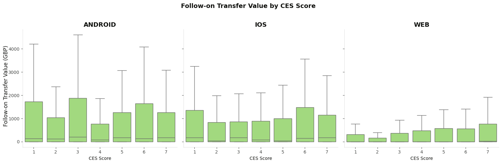
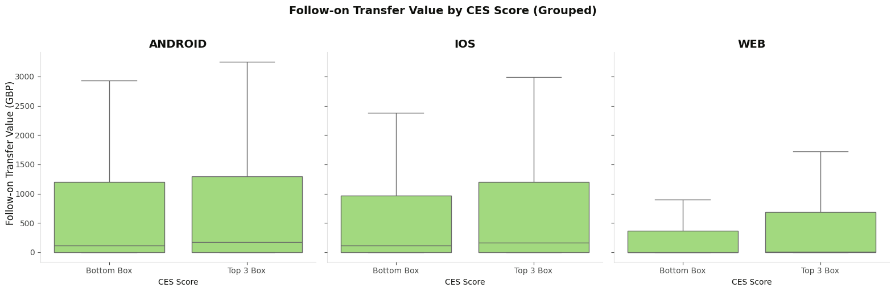
Follow-on transfer value does not differ significantly by CES score on mobile (Android p=0.53, iOS p=0.07). Only Web shows a significant difference (p<0.0001). Transfer value is heavily skewed by a few high-value senders — the Web signal may be driven by a small number of power users rather than a broad behavioral pattern.
Follow-On Transfer Count
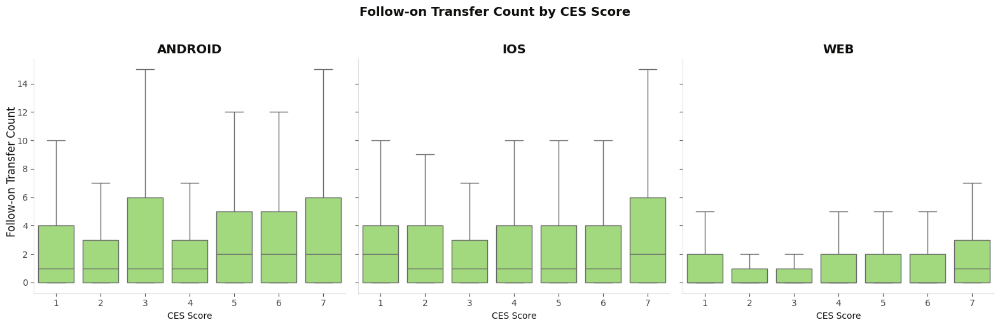
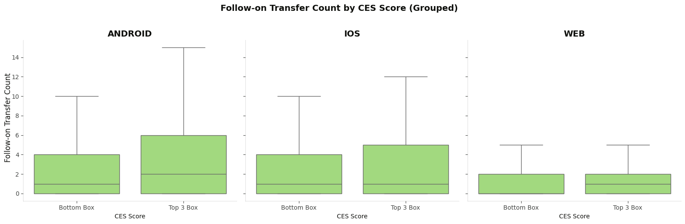
Follow-on transfer count is the strongest behavioral signal for CES. It's significant across all platforms (Android p=0.002, iOS p=0.008, Web p<0.0001). Higher CES users make more repeat transfers. The top/bottom box grouping confirms this (all platforms p<0.05).
This is the most actionable finding, but causality is unclear — users with stronger underlying intent to use Wise may both rate the experience higher and transact more frequently.
Regression Analysis
The rest of the doc is technical assessment to verify the insights above are accurate. If you're a stats nerd, read on.
If you're happy with what you've just learned, you can go ahead with your day!
Negative Binomial Regression: Follow-On Transfer Count
Predicting follow-on transfer count from CES score, controlling for platform (reference=Android) and registration country (countries with ≥30 respondents).
After controlling for platform and country, CES score remains a significant predictor of follow-on transfer count (p<0.0001). Each 1-point CES increase is associated with 7.9% more follow-on transfers (rate ratio=1.079). Web users make significantly fewer follow-on transfers than Android (coef=-0.80), while iOS is not significantly different from Android.
Logistic Regression: Conversion
Predicting whether a user converts to their first transfer, controlling for platform and country.
CES also predicts conversion (p<0.0001), but the effect is weaker: odds ratio of 1.026 (~2.6% increase per CES point). The transfer count model tells a much stronger story than the conversion model.
Scale Psychometrics (IRT Analysis)
Item Response Theory (Graded Response Model) applied to the CES 7-point scale to assess how well each scale point differentiates between users with different levels of verification friction.
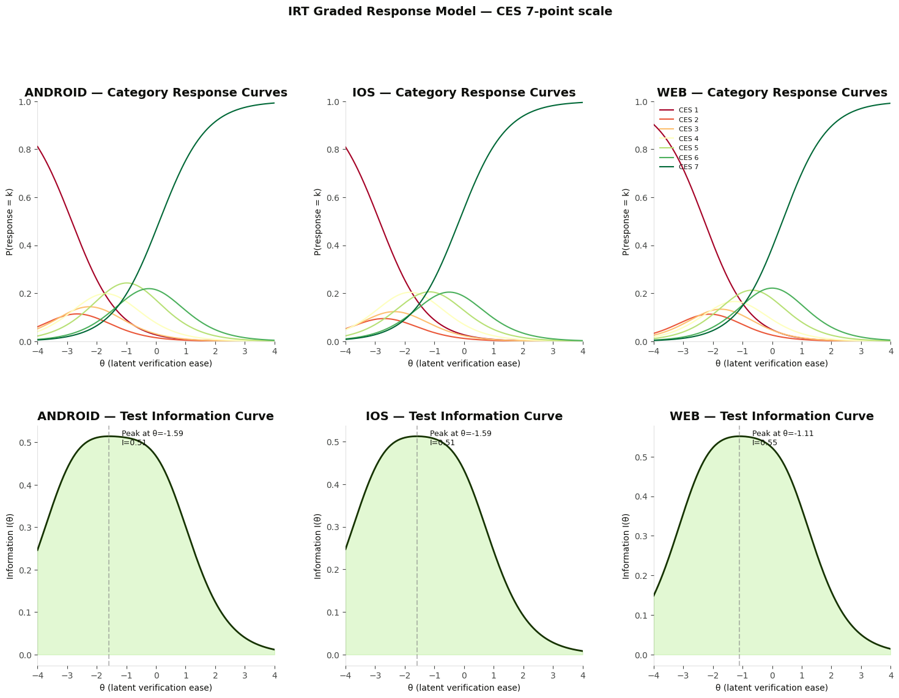
Category Response Curves: Each coloured line represents one CES option (1–7). The x-axis (θ) is latent verification ease (left = high friction, right = low friction). A well-functioning scale point has a clear peak where it's the most likely response. Overlapping or flat curves indicate categories that don't differentiate well.
Test Information Curves: Higher information = more measurement precision. A broad curve means the scale measures well across a wide range of users. The peak location shows WHERE on the friction spectrum CES is most useful.
Discrimination is moderate and consistent (~1.26 across platforms). All seven scale points produce distinct response curves — each has a region where it's the most probable response.
Threshold gaps are narrower at the low end (b1–b2: ~0.30–0.36) than the high end (~0.66–0.79), meaning the scale differentiates less well among very dissatisfied users. This makes sense: users who score 1, 2, or 3 are all simply "unhappy" without much meaningful distinction between them.
Differential Item Functioning: Mobile vs Web
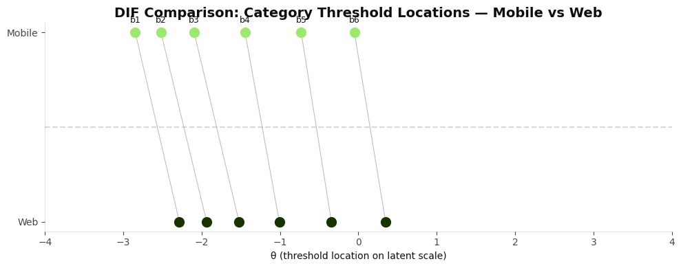
Significant DIF detected (χ²(7) = 556, p < 0.001): mobile and web users interpret the CES scale differently. Mobile thresholds are shifted lower on the latent scale, meaning mobile users give higher CES scores for equivalent levels of latent friction. This confirms that raw CES scores are not directly comparable across platforms without adjustment.
7-Level vs 3-Level Scale Comparison
Collapsing to 3 levels (Low 1–3 / Mid 4–5 / High 6–7) produces interpretable effects — High CES users make 42% more transfers than Low (rate ratio=1.42, p<0.0001) — but the 7-level model has lower AIC (44,124 vs 44,200), meaning the full scale retains useful predictive information.
The ordinal logit also confirms mobile users are significantly more likely to fall into higher CES categories (coef=0.40, p<0.001), consistent with the DIF finding.
Important Caveats
- Causality is not established. Users with inherently stronger intent to use Wise may both rate the experience higher and transact more. This analysis shows association, not that improving CES causes more transfers.
- Survivorship bias. Users who rage-quit during verification never took the survey — the worst-experience users are missing from the data entirely.
- Perception-based measurement. User motivations and mental models add noise to the CES signal. This data wasn't designed for this kind of longitudinal analysis; properly designed measurement systems would mitigate these issues.
- Additional behaviors. This analysis does not capture pre-survey behavior such as verification attempts, document rejections, etc. Some of this is unavailable due to limited context, but much may be impossible to connect due to limitations in measurement system design.
Implications & Next Steps
- Economic signal exists: There is evidence of a downstream economic benefit to Wise from improving verification experiences (more repeat transactions).
- Experimentation needed: Properly designed A/B tests and measurement systems with more data would be needed to quantify the true effect and isolate its drivers.
- Measurement redesign: Consider reducing scale granularity for cleaner signal. Design surveys explicitly for longitudinal behavioral tracking.
- Platform-specific investment: Mobile shows the clearest signal for conversion uplift. Web's relationship is weaker and may require separate investigation.